Practica 5: Formularios
Formulario A
Realizamos un formulario en HTML donde introducir datos de una persona.
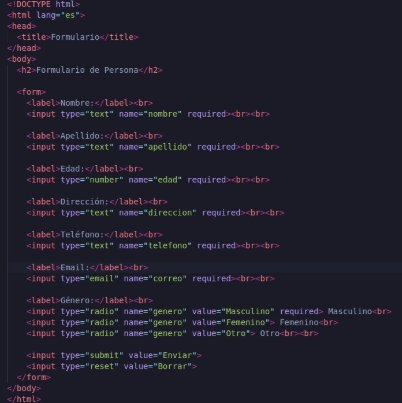
Vemos en un navegador como se ve.
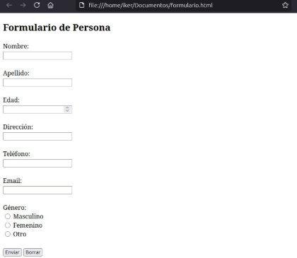
ENVÍO POST
Modificamos el fichero HTML para poder seleccionas los idiomas que habla una persona.
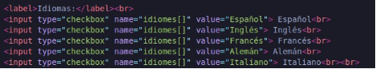
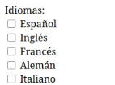
Ahora modificamos la siguiente línea para que se envíe la información mediante POST.
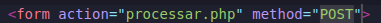
Ahora creamos la pagina processar.php en esta pagina mostrará los datos ingresados al formulario anterior.
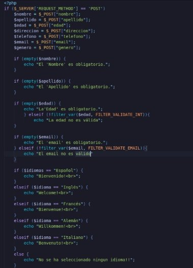
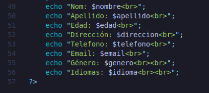
Comprobamos que funciona introduciendo datos en el formulario.
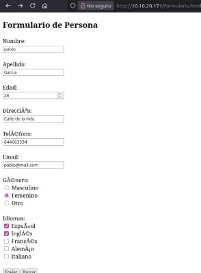
Y al enviar vemos los datos.
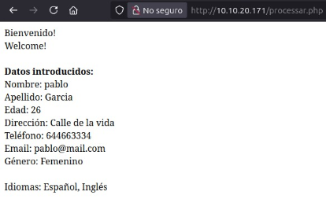
ENVÍO GET
Ahora probamos el formulario con diferentes datos y cambiamos el método de envío de POST a GET.
Modificamos el fichero PHP cambiando de POST a GET.
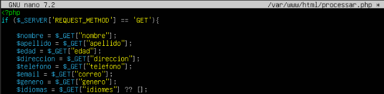
Y también modificamos el fichero html.
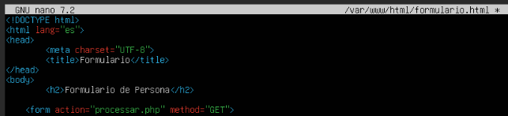
Introducimos nuevos datos.
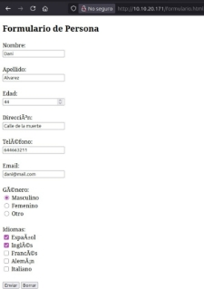
Y al enviar, nos sale en la URL.
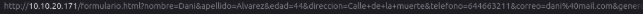
Formulario B
Realizamos un nuevo html donde haremos el formulario, este lo alojaremos en /var/www/html.
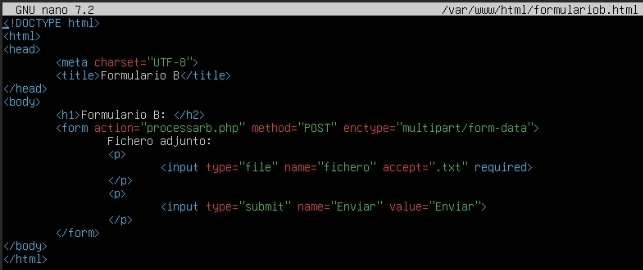
Que se ve tal cual así.
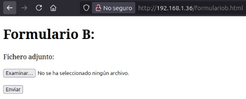
Ahora creamos el fichero PHP.
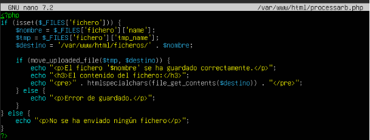
Ahora crearemos un fichero donde pongamos una frase motivadora en un archivo .txt
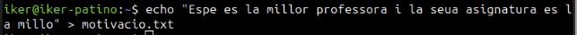
Ahora en la pagina subiremos dicho fichero.
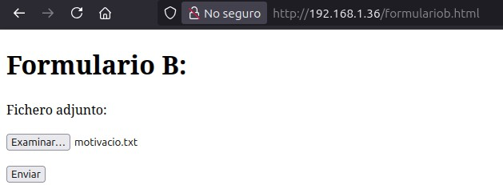
Enviamos y una vez, comprobamos que funcionó.
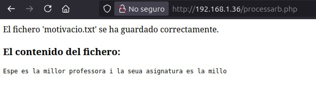
Y comprobamos que se guardó en el fichero que pusimos anteriormente.
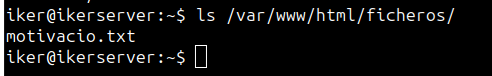